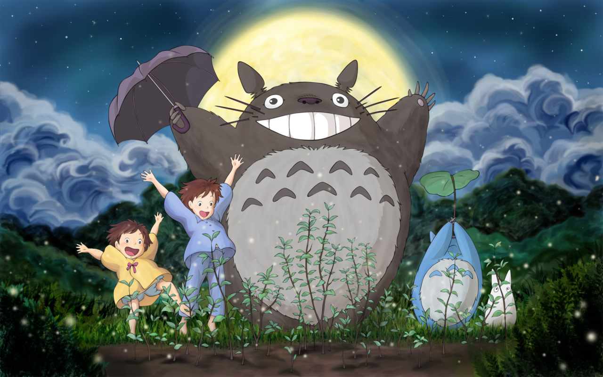

Sobre
Totoro é um personagem da animação Tonari no Totoro (となりのトトロ), ou Meu Amigo Totoro, que, após o lançamento do filme, tornou-se o ícone do Studio Ghibli, sendo sua imagem, inclusive, o logotipo do estúdio.
Por gerações, tal criação do incrível Miyazaki tem conquistado fãs, por isso é bastante famosa em várias partes do mundo. Ainda que a obra da qual Totoro faz parte tenha sido lançada em 1988, ao mesmo tempo que “Hotaru no Haka” — outro grande sucesso do diretor —, mas sem grande visibilidade ou mesmo indicação ao Óscar, são poucos os que não conhecem essa carismática figura.
Meu Vizinho Totoro
Meu Vizinho Totoro é um filme animado de fantasia escrito e dirigido por Hayao Miyazaki e produzido pelo Studio Ghibli em 1988. O filme conta a historia das duas jovens filhas (Satsuki e Mei) de um professor e suas aventuras com espíritos da floresta amigáveis no Japão pós-guerra rural.
Depois de escrever e produzir O Castelo no Céu (1986), Hayao Miyazaki começou a dirigir Meu Amigo Totoro para o Studio Ghibli. A produção de Miyazaki acompanhou a produção de Túmulo dos Vagalumes, de seu colega Isao Takahata. O filme de Miyazaki foi financiado pelo produtor executivo Yasuyoshi Tokuma. Ambos foram lançados simultâneamente em 1988.O lançamento em conjunto foi considerado “uma das duplas em cartaz mais emocionantes e notáveis já oferecidas ao público do cinema. ”